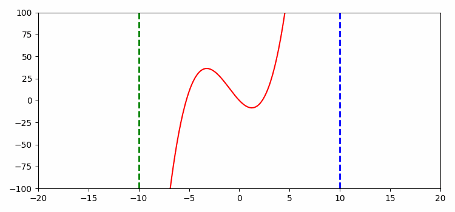

Golden section search - explanation and visual implementation in Python
Explanation
"If function f is unimodal on the interval [a,b], then the minimum for f can be located to any desired accuracy by the well known methods of Fibonacci search or golden section search "[Algorithms for Minimization without Derivatives, Richard P. Brend] It can also calculate the maximum, if the negative function -f(x) is used. When multiple extrema exist, the method will converge to one of them. the golden section search iteratively shortens the range of values in the interval. It is robust but very slow. The golden section search was discovered by Kiefer(1953)
The golden ratio is the division ratio of a distance or other quantity in which the ratio of the whole to its larger part (also called the major) is equal to the ratio of the larger to the smaller part (the minor). Thus, with a as the major and b as the minor:
$$\frac{a+b}{a}=\frac{a}{b}$$The division ratio of the golden section calculated as a number by means of division of these quantities is an irrational number
$$\phi = \frac{a}{b}=\frac{a+b}{a}=\frac{1+\sqrt{5}}{2}\approx 1.6180339887$$We start by having these information
- function f
- left interval boundary a
- right interval boundary b
- the golden ratio
We now calculate a value d
$$dx = \frac{(b - a)}{\phi} $$We can use this to calculate our new x values for the left (a):
$$d = a+dx$$and for the right (b):
$$c = b-dx$$We now find the value of f(c) and f(d). If f(c) < f(d)
- eliminate all x values < d
- d becomes new a
if f(c) > f(d) then:
- eliminate all x values > d
- c becomes new a
Graphical Implementation in Python
- Specify the function to be minimized, f(x), the interval to be searched as {X1,X4}, and their functional values F1 and F4.
- Calculate an interior point and its functional value F2. The two interval lengths are in the ratio c : r or r : c where r = φ − 1; and c = 1 − r, with φ being the golden ratio.
- Using the triplet, determine if convergence criteria are fulfilled. If they are, estimate the X at the minimum from that triplet and return.
- From the triplet, calculate the other interior point and its functional value. The three intervals will be in the ratio c:cr:c.
- The three points for the next iteration will be the one where F is a minimum, and the two points closest to it in X.
- Go to step 3